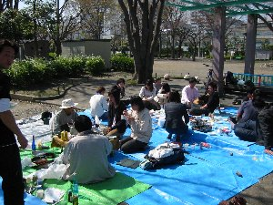
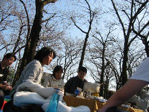
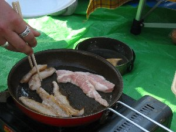
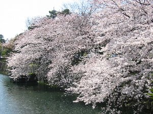
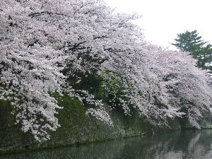

花見 | ２００４年３月 |
|---|---|
| 毎年恒例となっている花見だが、今年は静岡市内の森下公園で「静岡ご近所の会」とのコラボ花見となった。 今年は、例年より開花が早いと言う話だったので、花見を一週間早めたところ、寒の戻りが有り、花見会場は花が数えるほどしか咲いていなかった。 一応、朝８時から場所取りをしていたのだが、他の花見客と言えば、本日を防災訓練としょうし、訓練をしたのは一部の男だけ、しかもポンプを一回動かしただけの、近所の町内会。 後は炊き出し訓練なのか、大きな釜や、直火禁止の公園内で焚き火をして、何かを焼いていた。輪投げ等をして遊んでいたが、あれは非常時に置ける気晴らし訓練で有ろうか？ ともあれ、集合時間の１０時３０分、ご近所の会メンバーは続々と来るが、我がたすまんずは買い出しの時間が掛かっているのか、誰も来ない。 １１時過ぎ、公園内にザックを背負った集団（もちろん、たすまんず）が乱入！これが花見客かと思うほどの装備で、「これからどちらの山に行かれるですか？」とか、質問を浴びそうな格好であった。 しかし、私は「あーやっぱり、たすまんずだ」と、何故か安心と、安らぎを覚えた。 | |
|  花見会場です〜 |  桜なんて咲いてないね〜 |
| （断って置くが、変な集団だと言っているのではない。単に荷物を沢山入れる入れ物が、ザックだった、だけの話である。） ご近所の会の皆様は、買い出しのお寿司や、揚げ物を食している時、たすまんずは材料を切り、鍋の準備をしていた。今日はキノコ鍋だ！ キッカーが自宅でスモークしてきたチーズを、沢山持ってきていた。これはご近所の会でも評判だった。もちろん鍋も。 桜は咲いていなかったが、休日をまったりと満喫した日であった。 | |
|  豚トロです〜おや、誰かの手が・・・ |  目玉焼き一挙に六個！ |
| あまり桜の写真が無いと寂しいので、私が個人的に撮った桜の写真でも載せておこう。 今回は駿府公園外堀の桜である。花見から一週間後、駿府公園の桜は、ちょうど満開を迎えていた。 | |
|  花いっぱいです〜 |  こちらも花いっぱい |
| コメント＆写真 ｂｙべっしー | |